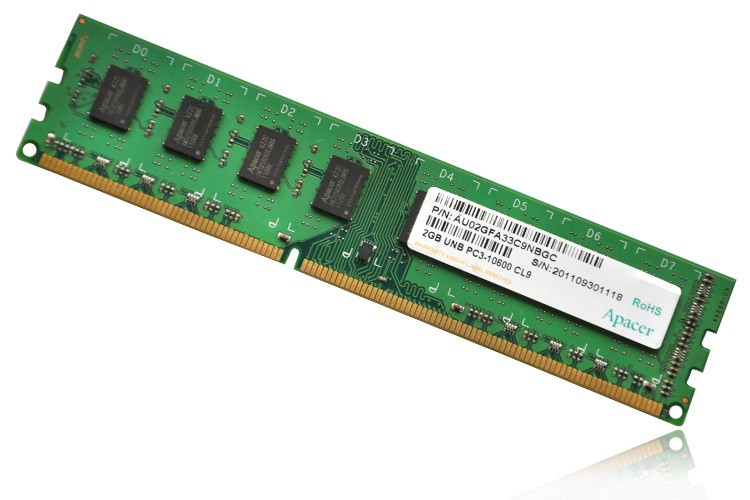

Um sistema de numeração (ou sistema numeral), é um sistema em que um conjunto de números são representados por numerais de uma forma consistente.
O sistema binário ou de base 2 é um sistema de numeração posicional em que todas as quantidades se representam com base em dois números, ou seja, zero e um (0 e 1). Os computadores digitais trabalham internamente com dois níveis de tensão, pelo que o seu sistema de numeração natural é o sistema binário. Com efeito, num sistema simples como este é possível simplificar o cálculo, com o auxílio da lógica booliana. Em computação, chama-se um dígito binário (0 ou 1) que equivale a um bit.
Sistema Octal é um sistema de numeração cuja base é 8, ou seja, utiliza 8 símbolos para a representação de quantidade. O octal foi muito utilizado em informática como uma alternativa mais compacta ao binário na programação em linguagem de máquina, porém nos dias atuais, o sistema hexadecimal é mais utilizado como alternativa ao binário.
O sistema hexadecimal é um sistema de numeração posicional que representa os números em base 16, portanto empregando 16 símbolos (0, 1, 2, 3, 4, 5, 6, 7, 8, 9, A, B, C, D, E e F). Está vinculado a informática, pois os computadores costumam utilizar o byte como unidade básica da memória, e devido a um byte representar 2{8}=256} e isto pode representar-se de forma mais fácil em base 16 devido o número de bits ser múltiplo de 16.
A placa mãe (mainboard ou motherboard) é a parte do computador responsável por conectar e interligar todos os componentes do computador, ou seja, processador com memória RAM, disco rígido, placa de vídeo, entre outros. A placa-mãe é formada por diversos componentes internos e externos como barramentos, cooler, memória RAM, chipset, entre outros.
Um Slot é um conector que faz a ligação dos periféricos ao computador. Os slots que compõem a placa-mãe são chamados de Slots de Expansão que interligam placas adicionais a placa-mãe.
Um barramento é um conjunto de linhas de comunicação que permitem a interligação entre dispositivos de um sistema de computação, também conhecidos como "circuitos". Os barramentos podem ser denominados internos ou externos. Existem três tipos diferentes de barramentos, um deles é o barramento de dados que transmite dados entre as unidades que compõe o circuito. Outro tipo de barramento é o barramento de endereço que é usado para selecionar a origem ou destino de sinais transmitidos num dos outros barramentos ou numa de suas linhas. O último tipo de barramento é barramento de controle que tem como função sincronizar as atividades do sistema.
Placas de expansão são dispositivos que se utilizam para estender as funcionalidades e o desempenho do computador. Esses por sua vez, são conectados por slots de expansão. Existe uma grande diversidade de placas de expansão, como, por exemplo, placas de rede, placas de vídeo, placas de som entre outras.
Um dos sistemas de computação é formado por um conjunto de módulos de "Entrada e Saída". As interfaces de entrada e saída são responsáveis pela conexão entre as várias partes de um sistema computacional. Esta interface é responsável por conectar fisicamente o processador e a memória do sistema ao barramento, tornando-se o terceiro elemento do sistema computacional proposto (sistema de memória, sistema de processamento e sistema de entrada e saída). O sistema de entrada e saída não faz apenas comunicações físicas e sim também é responsável pela comunicação lógica entre o barramento e o dispositivo. São exemplos de unidades de saída de um computador: monitor, caixas de som, impressora etc.
O microprocessador, geralmente chamado apenas de processador, é um circuito integrado que realiza as funções de cálculo e tomada de decisão de um computador. Todos os computadores e equipamentos eletrônicos baseiam-se nele para executar suas funções, podemos dizer que o processador é o cérebro do computador por realizar todas estas funções.
A Unidade Lógica e Aritmética, é responsável por efetuar cálculos lógicos e aritméticos.
Os registradores são circuitos digitais capazes de armazenar e deslocar informações binárias, e são tipicamente usados como um dispositivo de armazenamento temporário.
Serve para que o processador seja capaz de efetuar cálculos com números enormes de 64 ou 128 bits, por exemplo.
Unidade de Gerenciamento de Memória é um dispositivo de hardware que traduz endereços virtuais em endereços físicos.
Dispositivo de armazenamento é um dispositivo capaz de armazenar informações dados de forma "volátil" ou "não volátil".
As memorias RAM (memória de acesso aleatório) é um componente essencial não apenas nos computadores pessoais, mas em qualquer tipo de computador, pois é onde basicamente ficam armazenados os programas básicos operacionais e informações aleatórias. Exemplos básicos de memorias RAM, são, as memorias DDRs.
As memórias ROM (memória somente de leitura) tem o recurso de gravas dados de forma permanente, ou seja, mesmo sem o uso de energia elétrica. Exemplos de memorias ROM, podemos destacar, HD, Pen Drive, CD, SD, entre outros.
Quando se é ligado um computador, é ativado várias funções no comando interno da placa-mãe, esse processo é chamado de Boot. O boot é o processo de inicialização de um computador, o qual acontece no momento em que você pressiona o botão “Ligar” da máquina até o total carregamento do sistema operacional instalado. Durante esse processo é ativado a BIOS que faz o carregamento do "Sistema Operacional" a memória RAM. A BIOS (Sistema Básico de Entrada e Saída) é um tipo de sistema usado para realizar a inicialização do computador. Nesse sistema a um programa chamado Setup. O Setup é uma configuração que permite que o utilizador faça alterações em determinados programas, para que eles funcionem de forma mais adequada às suas necessidades. O programa Post uma sequência de testes ao hardware de um computador, realizada pelo BIOS, responsável por verificar preliminarmente se o sistema se encontra em estado operacional.